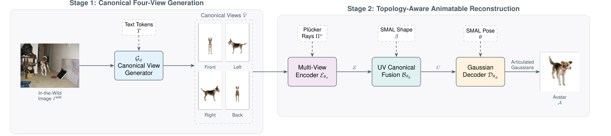
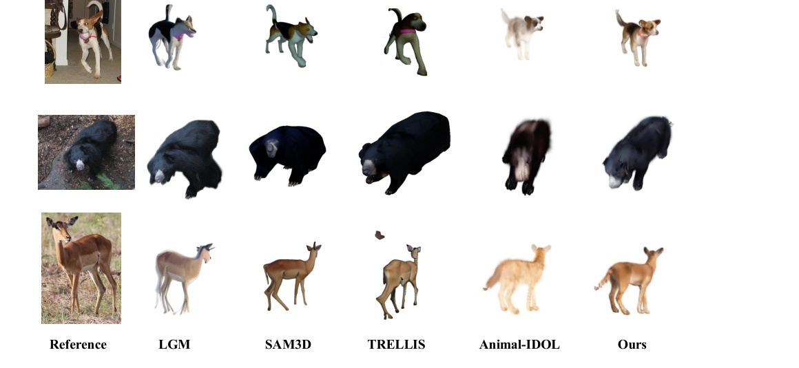

A feed-forward framework that turns one casually captured animal image into a controllable, SMAL-aligned Gaussian avatar by first hallucinating canonical semantic views and then reconstructing topology-aware articulated Gaussians.

AniGauss addresses the under-constrained setting where the input is a single in-the-wild image but the output must remain both visually faithful and controllable.
Formulates feed-forward animatable animal reconstruction in the wild as a harder setting than video-based capture or static image-to-3D recovery.
Anchors Gaussian primitives to the SMAL animal body prior so the reconstructed avatar remains structurally coherent and explicitly re-posable.
Uses textured parametric animal assets with exact canonical-view and articulated 3D supervision to train the canonicalization and reconstruction pipeline.
The first stage reduces monocular viewpoint ambiguity. The second stage converts ordered multi-view appearance into an articulated Gaussian avatar.
Pipeline overview. Given a single in-the-wild image, AniGauss predicts canonical semantic views and reconstructs an animatable animal avatar through multi-view encoding, UV canonical fusion, and SMAL-topology-anchored Gaussian decoding.
Instead of asking the reconstruction network to infer every unseen side from one observation, AniGauss first completes a semantically ordered set of canonical views: front, left, right, and back.
The decoder predicts Gaussian attributes in a canonical animal space and articulates them through the underlying SMAL topology, enabling controllable pose-conditioned rendering.
AniGauss is evaluated on challenging quadruped images with articulation variation, occlusion, and complex appearance patterns.

The project poster summarizes the AniGauss pipeline, topology-aware Gaussian representation, and qualitative comparisons.
We plan to further improve AniGauss with stronger canonical-view generation, richer topology-aware Gaussian modeling, more diverse animal categories, and more robust handling of challenging in-the-wild cases such as occlusion, extreme articulation, fur, and fine geometric details.
@inproceedings{anigauss2026,
title = {AniGauss: Toward Animatable Animal Reconstruction from Single In-the-Wild Images via Topology-Aware Gaussians},
author = {To be updated},
booktitle = {To be updated},
year = {2026}
}